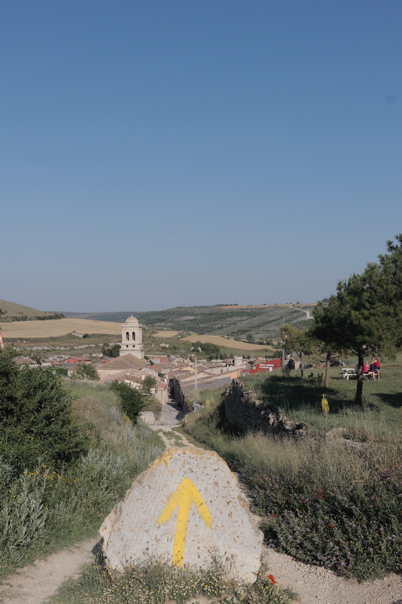

タスク説明

写真①
 写真②
写真②
 写真③
写真③
この写真に対して撮影された国は「ブラジル」「アルゼンチン」「フランス」「スペイン」との意見があり、どれが正しいかを議論しています。
オンタナスはカミーノ・フランセスで、スペインの記事にも載っているなのでスペインの写真であるという推論があります。
この時、「オンタナスはカミーノ・フランセスで、スペインの記事にも載っている」という前提条件が必ず正しいと仮定した場合、上記の推論は妥当でしょうか？
文章とリンク先の記事に一通り目を通した上で，最終的にどれ程度正しいと思うか判断してください。
- オンタナストいう村は教会の塔が特徴的であるため。参照URL
- この場所は世界遺産にも登録されていて、サント・ドミンゴ・デ・ラ・カルサーダへ向かう道となっているから。
WikipediaのURLを添付。参照URL
- 写真を画像検索して、同じ場所だと思われる写真が載っている記事にベラロードやカストロヘリスといった地名が出てきており、それがスペインの地名だからです。